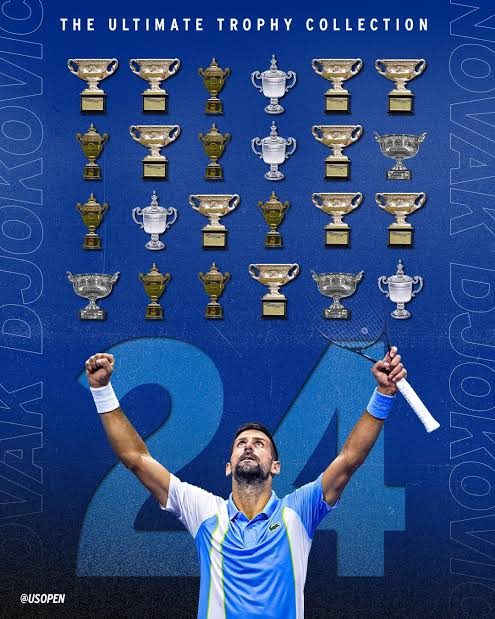
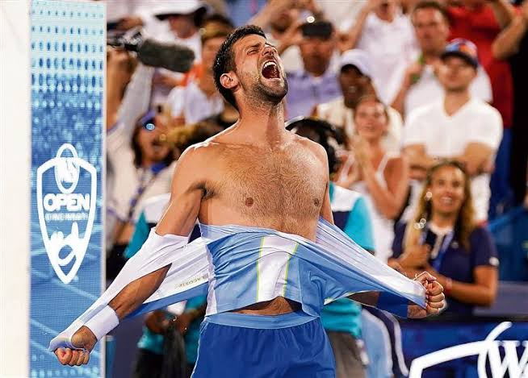
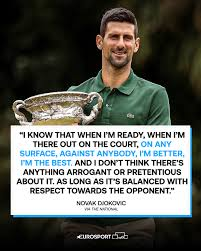

As one of the greatest tennis players of all time,Novak Djokovic has always being a source of moltivation to me and many aspiring professional tennis players.The fact that he came when the sport was dominated by the Big Two(Federer and Nadal) who were almost unbeatable on the the tennis tour and dominated the Grandslams(the most prestigious tournament in tennis), all major tennis events and still made his own ground by beating them both in their prime and racking up Grandslams and other tropies along the way which paved the way for the name The Big Three. One thing I loved about him was his determination to be the best and not keep it to himself as when asked about him wanting to be the greatest,he answers with confidence and he's not passive about anything. When he says he wants to achieve something he does achieve it by working hard and following his goals with well planned strategies. That's why he broke a lot of impossible records and overtook Federer and Nadal in almost every possible records in Tennis including the highest of them all the Grandslam which he has won 24 of them to tie the most Grand slams won either by a Male or Female player with Margaret Court. He completed this feat last year at the US open, as last year for Novak was the best of the lot as he broke a lot of records to add to his incredible feat of 24 Grandslams.
He is a relentless player with a crazy strong mentality and a game style that makes it a very difficult player to play against as he could drain you in a rally and also hit some very good groundstrokes with bite to finish the points. He is very flexible and tries to reach all balls as he covers all corners of the court with perfection, which is a habit I tried to emulate and got it to fit my gameplay. He is so energetic and athletic as he's not just good in Tennis but other sports too. Novak never gives up, even when he's losing or a point to losing a match. He always comes up top as he have proven a lot of times whether it's a five setter, three setter, final set, tie break or even a final with a lot of pressures he handles it very well like it doesn't affect him even if it does. He handles the crowd also well as even when he gets booed, he seems to motivate him to play better as he works on his mindset to believe he's not the being booed but cheered as he himself said.
There have been arguments on who's the greatest of all time in tennis is for a long while now as fans are divided by their choices on the Big Three. For me it's definitely Novak as he has proven many times by breaking all possible records but due to a lot of fans not liking him and his attitude, they prefer more of Federer or Nadal as they are said to be gentlemen on and off courts and more humble. This is hypocrisy for me, because before Novak broke the records of most Grandslams, it was said that the person with the most Grandslams is the Greatest of all time and at that time it was Federer who was loved by all, but as soon as Novak became the Player with the most, the criteria for the fans changed and it's about being a gentleman,humble, loved by the fans and all other irrelevant sports related stuffs. I don't have anything against Federer and Nadal but Novak have proven himself time after time that he is worthy of that title. Novak might not be most likeable person or player because he's just being expressive about how he feels at most time which some fans take as arrogance and disrespect but I prefer when someone is straight forward about their actions rather than sugarcoating their words which is what most players do on the tennis tour do.
Novak has inspired me to push to be a professional tennis player even though I have few shortcomings as there are a lot of distractions or the fact that our lifes and opportunities are different due to the fact that the place I live in is not really supportive. Novak also faced challenges too as he grew up during war and setbacks in his home country but never gave up on his dreams. Novak is my role model because he came up when everybody thought Federer and Nadalwere unbeatable and he beat them even having a better head to head record against both of them overall even when he was the underdog. He rose to the highest level in Tennis and achieved great things, even though he makes it difficult for we upcoming new generation players to break his records .